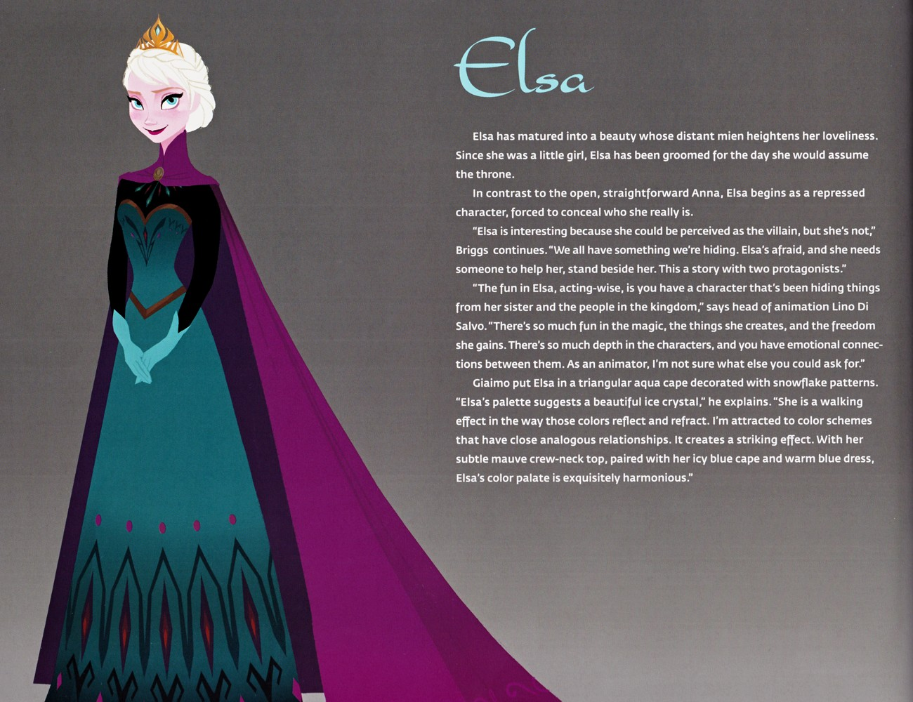

F1 Junior Novel · 艾莎的视角

📖 小说概述
以 2013 年动画电影为蓝本，将阿伦黛尔王国的故事改写为面向青少年读者的通俗小说。全书以一篇序章开篇，借山间采冰人之口引出这个北方国度的寒冷底色，随后沿着电影的叙事线索展开。电影是骨架，Junior Novel 是血肉——它把艾莎每个关键抉择前的心理都写了出来。
❄️ 艾莎在这本小说中的完整经历
童年与隔离
小公主艾莎天生拥有操控冰雪的魔法，在一个雪夜里，她与妹妹安娜在城堡中嬉戏玩雪，却不慎失手以魔法击中安娜的头。国王与王后急忙带受伤的安娜上山求助于巨魔，巨魔为安娜改写了记忆，抹去她对姐姐魔法的全部印象，并警告：艾莎的力量会随恐惧滋长，唯有「以爱化解恐惧」。此后，艾莎为不伤人不失控，从此紧闭心门、戴上手套自我压抑，姐妹俩逐渐疏远，城堡的大门也被长久封锁。
加冕与失控
多年后，加冕典礼的清晨终于到来，封闭的城堡重新开启，阿伦黛尔举国欢庆。艾莎在加冕日的内心独白写尽紧绷：每一次握手都像走钢丝。安娜在典礼上偶遇来自南方群岛的王子汉斯，两人迅速坠入爱河并决定结婚；与此同时，艾莎在舞会中情绪失控，魔法秘密当众泄露，她恐惧之下逃往北山，冰雪铺满大厅，第一次被叫作「怪物」。
北山与释放
安娜随即踏上风雪寻姐之路，在山中结识采冰人克斯托夫、驯鹿斯文，并得到会说话的小雪人雪宝相助——雪宝正是艾莎童年魔法的造物。众人穿越冰棱迷宫，寻至艾莎在山顶用魔法建造的冰雪宫殿。登上北山的艾莎甩掉手套与王冠，建起冰宫，第一次为自己而活——却也第一次确信自己不被人间接纳。然而艾莎拒绝回归，并在争执中将安娜误伤于心口——这一次留下的不是擦伤，而是一道正在冻结她生命的寒霜。
被囚与牺牲
汉斯将艾莎锁进地牢，篡夺权力，并宣称要除掉「危险的女王」。在风暴席卷阿伦黛尔的危急关头，安娜面临最后的抉择——她本可被克斯托夫救走，却看见汉斯正欲对艾莎下毒手，于是用尽最后力气扑上前为姐姐挡下致命一击，自己则彻底冰封。正是这一以爱相护的举动解开了诅咒：艾莎终于明白，能够化解恐惧的不是恐惧本身，而是爱与接纳。她的泪水与拥抱融化了安娜身上的寒冰，姐妹重聚。
🏷️ 作品定位
本书属于「电影小说化」（Junior Novelization）类型，即由迪士尼图书团队依据电影剧本改写而成的青少年向小说，并非原创故事。其情节、人物与对白框架与 2013 年动画电影《冰雪奇缘》保持一致，在正典体系中与电影平行、互为印证。相较于电影，青少小说在保持主线不变的前提下，以更舒展的篇幅描写人物的内心活动与环境细节。
🔗 与电影/其他作品的关联
- 电影《冰雪奇缘》(2013)：本书直接改编自该影片，章节标题与电影情节节点一一对应。
- 角色体系：安娜、艾莎、克斯托夫、斯文、雪宝、汉斯、巨魔、雪怪棉花糖等核心角色均出自电影，人物关系与命运走向完全相同。
- 续作关联：本书止于电影第一部的结局，与《冰雪奇缘 2》(2019) 之间无直接剧情承接，但同属阿伦黛尔正典世界。
✨ 这本小说补充了什么电影里没有的艾莎信息
- 艾莎加冕前夜的心理细节（Junior Novel 专章描写）
- 北山建宫时她与雪宝「诞生」的更多互动
- 汉斯在囚禁艾莎前后的算计被写得更透
- 安娜记忆回流、想起自己身份的过程更完整
- 序章以采冰人视角渲染北国风物，为电影画面之外提供想象空间
💡 这本小说如何改变/深化了我们对艾莎的理解
Junior Novel 让 F1 的艾莎从「情节推动者」变成「有血有肉的承受者」——我们跟着她的心跳经历加冕日的每一秒，也因此更懂她为何那样怕自己。小说在对话之外加入大量人物视角与情绪铺陈，尤其是艾莎的恐惧与自我压抑，使角色动机更具可读性。
⭐ 亮点与特色
- 忠于原作的叙事：作为电影官方小说化，剧情与电影高度一致，是考据阿伦黛尔主线故事可靠的一手文本。
- 补足的心理描写：小说在对话之外加入大量人物视角与情绪铺陈，尤其是艾莎的恐惧与自我压抑。
- 贴合青少读者的笔法：语言通俗流畅，节奏明快，章节短小（共 24 章），便于分级阅读。
- 环境氛围的文学化：序章以采冰人视角渲染北国风物，加冕夜、冰宫、暴风雪等场景在文字中具象可感。